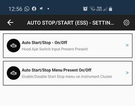

Modules¶
The modules section of the app gives access to actual control modules of the vehicle, live data provided by them and module-specific Activations.
Note
Activation is a “live” change that will NOT be stored after vehicle restart.
Adaptations¶
The Adaptation section allows making changes to various settings in the ECU. .. note:: Adaptations are permanent.
ESS - Engine Start/Stop System¶
Disabling Engine Start/Stop System is possible, but requires a few steps and a small hardware modification (reversible).
Attention
This feature is still being tested and may or may not work in your vehicle.
Connect to your vehicle in JScan
Go to Adaptation > Auto Stop/Start (ESS) Settings and see the following:
Auto Start/Stop On/Off - disable this setting to stop the ECU from monitoring the Hood Ajar switch.
Note
This will also disable Remote Start feature.
Auto Start/Stop Menu Present On/Off - disable this setting to remove the ESS-related menu entries on your instrument cluster (dashboard).
Note
If you don’t want to disable ESS but want to explore any issues with the system, enable this option - it will give you quite a good overview of the system status.
Disconnect JScan
Turn the vehicle OFF
Open the hood and follow the instructions below to disengage the Hood Ajar sensor:
The sensors (two of them) are just next to the grille on the left side of the vehicle (on your right, when you stand in front and look at the hood).
We need to remove only one of the sensors, but leave it plugged in to the harness
On the top side of the sensor, there are two tabs in the ring that mount the sensor to the metal bracket. Press both of them to release the sensor.
Pull the sensor up
Gently pry the plastic tab that holds the sensor together to disconnect the top part
Pull the cable along with the lower part through the metal bracket opening
Reassemble the sensor and secure it below & behind the bracket in an extended position (do not squeeze it - we want to simulate the hood open state)
Tire size¶
When changing tire size in a JL with a manual transmission it is necessary to follow the procedure below to avoid DTC P08A6 error.
Restart the PCM (Power Control Module) by either disconnecting the battery (batteries) or using JScan !Restart all ECUs adaptation
- Once reset, drive the Jeep so:
Vehicle speed is 40-80mph, in 6th gear
Accelerator pedal position is more than 0.392 volts
Flywheel torque is >75 Nm
Drive like this for at least 20 seconds.
Once the module reads all the data it will re-enable the all gear sensor performance diagnostic.